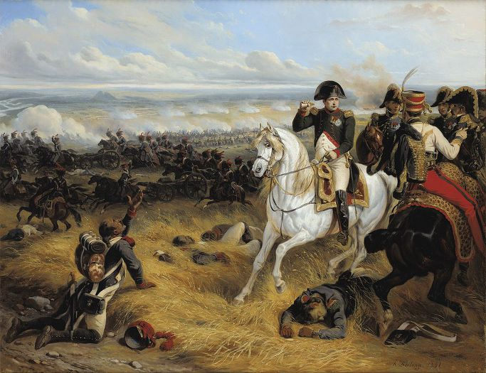
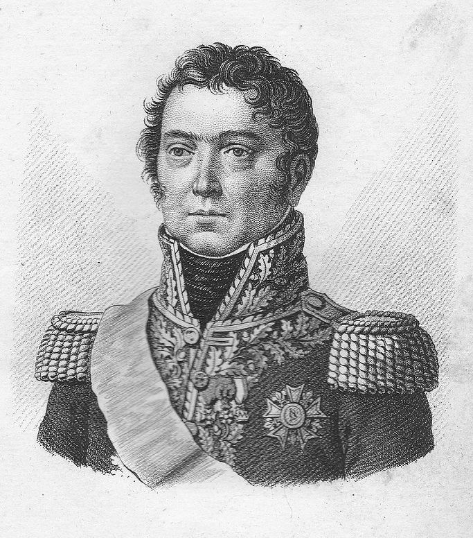
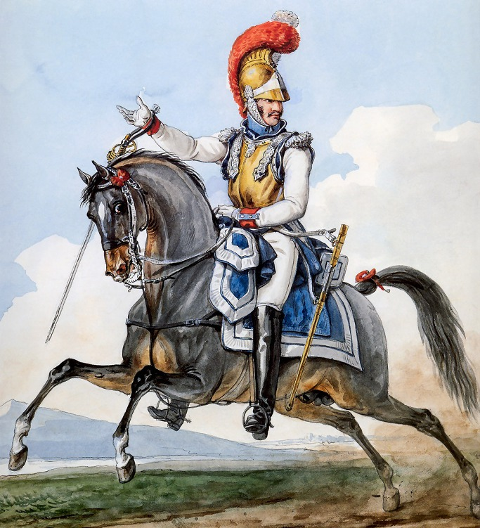

바그람 전투 (제15편) - 종과 횡
게시: 2017-10-01T03:34:07+09:00
나폴레옹은 전투 내내 전장 한가운데 위치인 라스도르프(Raasdorf)를 지키고 있었습니다. 그는 자신이 위치한 마르히펠트 평원보다 높은 곳인 루스바흐 고원 위에 있는 마르크그라프노이지들에서의 전황을 양군의 전열이 뿜어내는 머스켓 소총의 화약 연기를 보며 파악하고 있었지요. 그 연기의 긴 횡대가 마르크그라프노이지들 마을의 높은 석탑을 통과하는 보고, 그는 이제 승리의 때가 왔다고 확신했습니다. 그는 다부를 돕기 위해 일제히 전체 전선에 걸쳐 총공격을 명했습니다. 마세나는 남쪽 에슬링에서 클레나우를, 우디노는 고원 위의 호헨촐레른을 공격하면 되었지요. 그리고 막도날에게는 특별히 따로 명령서를 보냈습니다.

(바그람 전투 현장을 망원경으로 관찰하는 나폴레옹입니다. 무전기가 없던 당시 전투는 현장 지휘관의 재량권이 매우 큰 역할을 할 수 밖에 없었고, 따라서 장군들이 적탄이 빗발치는 곳까지 직접 나가 현장을 지켜보는 경우가 많았습니다.)
원래 막도날은 전날 밤에 공격했던 바그람을 공격할 예정이었습니다. 그러나 나폴레옹은 바그람 마을에 대한 공격은 외젠이 그르니에(Paul Grenier) 장군의 제6 군단을 이끌고 공격하도록 하고, 막도날에게는 새로운 임무를 주었습니다. 아더클라(Aderklaa)와 브라이텐리(Breitenlee) 사이 공간, 즉 서쪽 방향으로의 진격이었습니다. 베르나도트의 무단 이탈에 이어, 마세나를 아스페른 쪽으로 이동시키는 바람에 텅 비게 된 이 공간을, 나폴레옹은 일단 대포병단을 동원하여 무지막지한 화력으로 틀어막아 놓은 바 있었지요. 그러나 포병만으로 적진에 돌격을 할 수는 없는 노릇이었습니다. 포병 화력전으로 대혼란에 빠진 오스트리아군의 중앙부에도 쐐기를 박아넣을 묵직한 한방이 필요했는데, 거기에 막도날을 투입하기로 한 것입니다. 막도날에게 이 임무가 맡겨진 것은 어떻게 보면 당연한 것이었습니다. 마세나가 에슬링 쪽으로 이동하고나자, 아더클라에서 가장 가까운 위치에 있던 군단이 바로 막도날의 제5 군단이었습니다. 그리고 전날 밤에 막도날이 공격했던 바그람을 지키던 부대가 바로 지금 아더클라를 점거한 벨가르드 장군의 제1 군단의 일부였으니, 어제 못 끝낸 승부를 마저 끝내는 주인공이 막도날인 것이 자연스러웠습니다.

(그르니에 장군입니다. 하급 공무원의 아들로 태어나 사병으로 군에 입대했던 그의 인생을 바꿔놓은 것도 프랑스 대혁명이었지요. 그는 막도날보다 더 뛰어난 지휘관이라는 평가를 받기도 했는데, 결국 원수 계급에 오르지는 못했습니다. 그는 나폴레옹과 만나기 전에 모로의 휘하에서 주로 싸웠고 호헨린덴 전투에서도 큰 공을 세웠기 때문에, 나폴레옹파로 분류되지 못했던 것이 원수로 진급을 못한 이유가 아닐까 합니다.)
다만, 문제가 좀 있었습니다. 전날 밤에는 거기 없던 콜로브라트의 오스트리아군 제3 군단이 브라이텐리를 점거하고 있었습니다. 게다가 막도날이 지휘하는 제5 군단은 바그람 전투가 시작될 때 고작 7천의 병력을 가진 사실상 사단 정도의 규모였습니다. 워낙 빈약했기 때문에 전날 밤 바그람을 공격할 때도 베르나도트의 제9 군단으로부터 뒤파의 사단을 빌려 병력을 충원한 다음에야 공격을 할 수 있었습니다. 이제 뒤파 사단도 원대 복귀한 마당에 막도날의 병력만으로 2개 군단이 포진한 적 진형 한 가운데로 뛰어들라는 것은 말이 안되는 일이었지요. 그걸 이해했던 나폴레옹은 같은 이탈리아 방면군 소속 그르니에 장군의 제6 군단 휘하 2개 사단 중 스라(Seras) 사단을 떼어 막도날에게 임시로 붙여주었습니다. 그나마 스라 장군 자신은 부상 중이어서 모로(Moreau) 장군이 대신 지휘를 하고 있었습니다.
그래봐야 막도날이 지휘할 병력은 보병 1만1천 정도에 불과했습니다. 그럼에도 불구하고 나폴레옹이 막도날에게 진격을 명한 것은 승산이 있고 그럴만한 가치가 있는 공격이기 때문이었습니다. 알단, 이 공격은 적의 집단군 정면의 한가운데로 뛰어든다기보다는 벨가르드와 콜로브라트의 2개 오스트리아 군단의 이음새를 공략하는 것이었습니다. 대포병단과 다부의 활약으로 적 진영이 혼란에 빠진 틈을 타서 그 약한 이음새를 공략하면 오스트리아군 전선에 구명을 뚫을 수 있고, 그렇게 뚫린 구멍으로 프랑스 기병대가 우르르 쏟아져 들어갈 수 있다는 생각이었지요. 실제로, 비록 막도날의 지휘권 밑에 직접 붙여주지는 않았으나, 나폴레옹이 아끼고 아끼던 황실 근위대의 기병총(carabiniers-à-cheval) 연대 약 3800기를 딸려보냈습니다. 이 기병총 연대는 흉갑기병보다 더 덩치 큰 병사들을 더 키 큰 말에 골라태운, 최정예 기병대였습니다. 나폴레옹은 이번 전투의 승부는 다부의 라이트 훅으로 결판짓되, 적의 숨통을 끊는 타격, 즉 패퇴하는 적군을 추격 섬멸하는 것은 바로 여기서 끝장을 보려는 속셈이었습니다.

(어떤 기록에는 막도날의 병력 뒤를 따르던 부대가 기마 척탄병 연대라고 되어 있고, 어떤 기록에는 기병총 부대라고 되어 있습니다. 기마 척탄병이라면 곰가죽 모자를 쓰고 있었을 것이고 기병총 부대라면 흉갑 기병과 크게 다른 모습이 아니었을 것입니다. 위의 그림은 기병총 부대원의 모습인데, 사실 기병총을 주무기로 삼는 부대는 아니었습니다. 하긴, 척탄병도 수류탄을 휴대하지는 않았지요.)
그러나 기병총 연대가 지리멸렬 후퇴하는 오스트리아군의 등 뒤에 칼을 내리치기 위해서는 먼저 오스트리아군이 뒤돌아 도망치게 만들어야 했고, 그러기 위해서는 오스트리아군의 전선에 큰 구멍을 뚫어야 했습니다. 그리고 그 중대하고 어려운 임무는 바로 막도날의 어깨 위에 떨어진 것이었고요. 막도날은 무척 흥분되고도 긴장되었을 것입니다. 모로와의 관계 때문에 지난 5년간 좌천당해 실의의 나날을 보냈는데, 결정적인 순간에 이런 중대한 임무가 자신의 몫으로 돌아온 것입니다. 입신양명을 위한 절호의 기회였으나 그 성공은 결코 만만치 않았습니다. 무엇보다 훨씬 더 우세한 적을 향해 먼 거리를 진격해야 했는데, 그렇게 진격하는 동안 오스트리아군은 가지고 있는 모든 화력을 동원하여 막도날의 공격부대를 두들겨 팰 것이 뻔했습니다. 막도날이 당면한 가장 큰 문제는 자신의 부족한 병력이 적과 총검을 맞댈 때까지 어떻게 하면 적군의 대포와 총격으로부터 입을 피해를 최소화하느냐였습니다. 이건 매우 복잡하고 어려운 문제였고, 막도날에게는 기술적인 선택지가 여러개 있었는데, 정답이 무엇인지는 당시 아무도 몰랐습니다.
일반적으로 적진을 향해 공격할 때는 적절한 두께, 즉 3열 또는 4열의 긴 횡대(line)를 이루어 공격해야 했습니다. 그래야 정면으로부터 날아오는 적의 무자비한 대포알로부터 입는 피해를 최소화할 수 있고, 또 반대로 한꺼번에 적에게 최대한의 머스켓 화력을 쏟아부어 반격할 수 있기 때문이었습니다. 즉, 공격과 방어 모두에 있어 가장 뛰어난 대형이었습니다. 그러나 이 대형으로 먼거리를 진격할 수는 없었습니다. 대개의 전장은 넓직한 평원에서 벌어졌지만, 그런 평원도 크고작은 나무와 바위, 도랑과 관목 등의 크고 작은 장애물이 여기저기 흩어져 있기 마련이었습니다. 그런 장애물이 전혀 없다고 하더라도 사람은 제각각 걷는 속도가 다르다보니 긴 직선 횡대로 출발한다고 해도 걷다보면 결국 일부는 앞으로 튀어나오고 일부는 뒤로 쳐질 수 밖에 없었습니다. 따라서 먼거리를 그렇게 횡대로 진격하면 적 앞에 도착할 때 긴 횡대는 토막토막 끊긴 흐트러진 모습이 되곤 했습니다. 그래서는 밀집된 형태로 기다리는 적군에게 먹잇감이 되기 딱 좋았지요. 뛰어난 장교들과 부사관들이 죽을 힘을 다해 노력하면 긴 횡대가 직선을 유지하며 진격하는 것도 불가능한 것은 아니었습니다. 그러나 그럴 경우 필연적으로 전체 횡대의 진격이 느려질 수 밖에 없었는데, 그건 훨씬 더 긴 시간 동안 적의 일방적인 사격을 뒤집어써야 한다는 뜻이었습니다.
횡대의 이런 단점을 매우 잘 극복할 수 있는 대형이 있긴 했습니다. 바로 종대(column)였습니다. 대략 5~6열의 종대로 진격하면 거친 지형에도 불구하고 부대 전체가 한덩어리를 유지하면서도 비교적 빠른 속도로 진격이 가능했습니다. 그러나 대신 횡대가 가지는 모든 장점을 깡그리 날려먹는 것이 바로 이 종대였습니다. 적의 대포알 단 한 발에도 수십명의 허리와 발목이 부러질 수 밖에 없었고, 어렵게 적의 코 앞에 당도한다고 해도 그 상태로는 적에게 사격할 수 있는 인원은 맨 앞줄의 2열 10~12명 정도 뿐이었습니다. 그래서야 빠른 속도로 이동함으로써 얻는 잇점을 다 날려 먹는 셈이었지요. 가장 좋은 것은 가변 대형이었습니다. 즉, 먼거리를 이동할 때는 종대로 이동하다가 머스켓 유효사거리에 근접해서는 대형을 횡대로 변경하는 것이었지요. 그러나 이게 말은 쉬워도 적의 대포알과 탄환이 우박처럼 쏟아지고 화약연기가 자욱한 상태에서 대오를 바꾸는 것은 정말 어려운 일이었습니다. 까딱하다간 적의 코 앞에서 우왕좌왕하다 대참사가 일어날 수도 있었습니다.
이렇게 어떤 방식을 택해도 잇점과 단점이 명백한 상황에서, 과연 막도날의 선택은 어떤 것이었을까요 ?